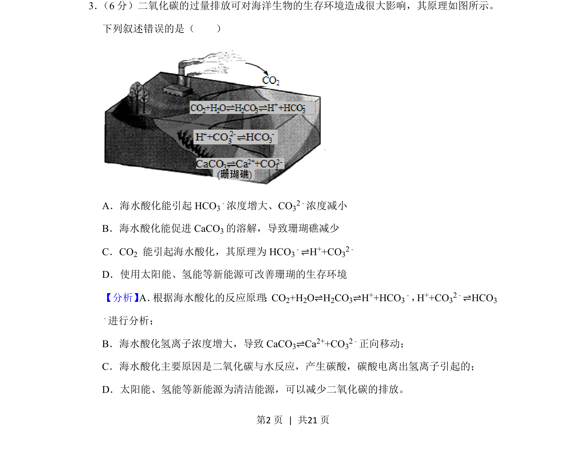
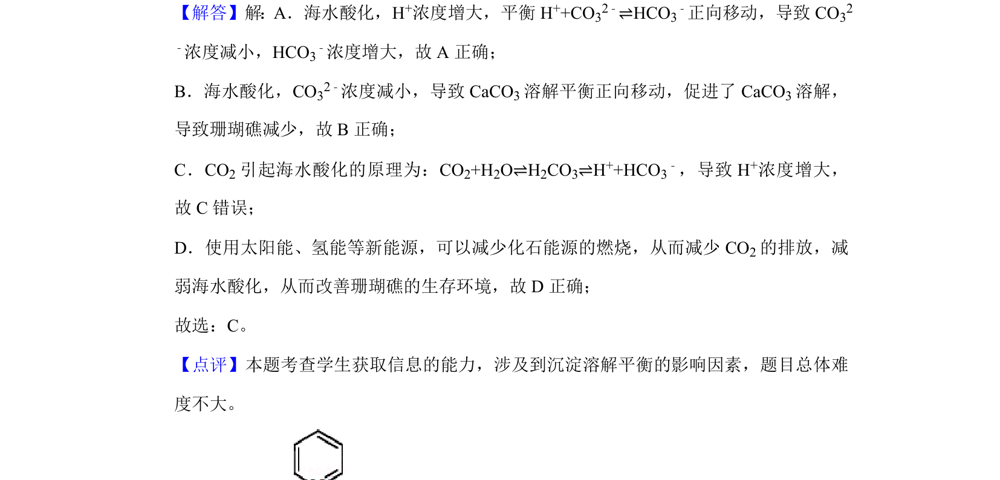

2020-新课标Ⅱ-03
考点：化学平衡 电离平衡 环境化学
题面


摘要
该题考查二氧化碳过量排放对海洋环境的影响及相关化学平衡分析。
关联考点
答案与解析

📄 原 PDF 第 2 页：
素材/真题/吉林/2008-2024·（吉林）化学高考真题/2020年高考化学试卷（新课标Ⅱ）（解析卷）.pdf
题干文本
3． （6分）二氧化碳的过量排放可对海洋生物的生存环境造成很大影响，其原理如图所示。 下列叙述错误的是（ ） A．海水酸化能引起HCO 3 ﹣浓度增大、CO32﹣浓度减小 B．海水酸化能促进CaCO 3的溶解，导致珊瑚礁减少 C．CO2 能引起海水酸化，其原理为HCO 3 ﹣⇌H++CO32﹣ D．使用太阳能、氢能等新能源可改善珊瑚的生存环境
解析文本
【分析】A． 根据海水酸化的反应原理 ：CO2+H2O⇌H2CO3⇌H++HCO3 ﹣，H++CO32﹣⇌HCO3 ﹣进行分析； B．海水酸化氢离子浓度增大，导致CaCO 3⇌Ca2++CO32﹣正向移动； C．海水酸化主要原因是二氧化碳与水反应，产生碳酸，碳酸电离出氢离子引起的； D．太阳能、氢能等新能源为清洁能源，可以减少二氧化碳的排放。